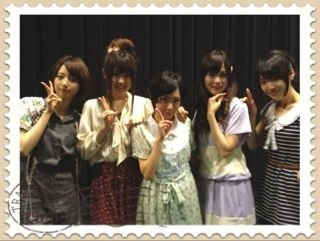
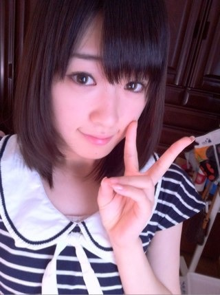
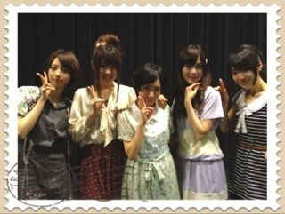
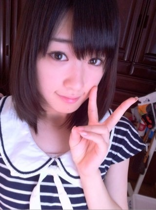

2012/0527Sun（´-`）.｡oO(かずみん×67
みなさん、こんばんは(^^)
前回のコメント、
温かい言葉、力強い言葉が
沢山ありました。
ありがとうございます！
頼もしい乃木坂Family。
皆様に支えてもらいながら
高山はどんどんレベルUPできるように
頑張りますね！
-------
さて、今日は名古屋での
ミニ個別握手会でした！
ミニ個別は初めてだったのですが、
会場がいつもより狭いというのもあって
みなさんとゆったり話せた気がします。
嬉しかった(*^_^*)
まっつん、まいやん、
ななみん、生駒ちゃん、
このメンバーもとっても仲良しなので
楽しかったです！
みんなお疲れ様( ´ ▽ ` )ﾉ

実は今日の私服、大好きなfi.n.tの
ワンピースだったのですが、
なんとオーディションの時に来てた
服なのです！
4次審査だったかな？
因みにオーディション前に撮った写真が

意外と今と変わらないですかね？
懐かしいなぁ。
今日はポニーテール♪
意外に握手会では初です。
どうですか(>_<)？
今日来てくださった初めましての方、
名古屋でいつも来てくださる方、
遠征していつも来てくださる方、
楽しい時間を
ありがとうございました！
また会いましょうね\(//∇//)\
来週も大阪で握手会♪
みなさんと会えるのを
楽しみにしています( ´ ▽ ` )ﾉ
---------
先日まあやから「ブログ見て！」
と相変わらずデコメいっぱいのメールで
来たので見てみました^^
見てすぐメール送っちゃいました。
嬉しい言葉が沢山書いてありました。
ありがとう。
まあやとは本当に仲がいいんですよ！
一緒にいると笑顔になれるんです(^-^)
優しくて気配りできて、みんなから
愛されてるまあや、
無理しちゃだめだぞ(>_<)
いつでもみんながついてるからね(^^)
--------
明日はmini×smartさんのライブに
出演させていただきます！
リハで完璧に叩き込んで
本番楽しんでこようと思います(^^)
日々前進！
頑張りますね♪.°
...今日はこの辺で。
みなさんもお身体に気をつけて、
毎日をお過ごし下さい(*^^*)
それでは、おやすみなさい...☆
前回のコメント、
温かい言葉、力強い言葉が
沢山ありました。
ありがとうございます！
頼もしい乃木坂Family。
皆様に支えてもらいながら
高山はどんどんレベルUPできるように
頑張りますね！
-------
さて、今日は名古屋での
ミニ個別握手会でした！
ミニ個別は初めてだったのですが、
会場がいつもより狭いというのもあって
みなさんとゆったり話せた気がします。
嬉しかった(*^_^*)
まっつん、まいやん、
ななみん、生駒ちゃん、
このメンバーもとっても仲良しなので
楽しかったです！
みんなお疲れ様( ´ ▽ ` )ﾉ

実は今日の私服、大好きなfi.n.tの
ワンピースだったのですが、
なんとオーディションの時に来てた
服なのです！
4次審査だったかな？
因みにオーディション前に撮った写真が

意外と今と変わらないですかね？
懐かしいなぁ。
今日はポニーテール♪
意外に握手会では初です。
どうですか(>_<)？
今日来てくださった初めましての方、
名古屋でいつも来てくださる方、
遠征していつも来てくださる方、
楽しい時間を
ありがとうございました！
また会いましょうね\(//∇//)\
来週も大阪で握手会♪
みなさんと会えるのを
楽しみにしています( ´ ▽ ` )ﾉ
---------
先日まあやから「ブログ見て！」
と相変わらずデコメいっぱいのメールで
来たので見てみました^^
見てすぐメール送っちゃいました。
嬉しい言葉が沢山書いてありました。
ありがとう。
まあやとは本当に仲がいいんですよ！
一緒にいると笑顔になれるんです(^-^)
優しくて気配りできて、みんなから
愛されてるまあや、
無理しちゃだめだぞ(>_<)
いつでもみんながついてるからね(^^)
--------
明日はmini×smartさんのライブに
出演させていただきます！
リハで完璧に叩き込んで
本番楽しんでこようと思います(^^)
日々前進！
頑張りますね♪.°
...今日はこの辺で。
みなさんもお身体に気をつけて、
毎日をお過ごし下さい(*^^*)
それでは、おやすみなさい...☆
2012/05/27 00:00
コメント(297)
握手会お疲れ！
今日は絵梨花いないから
行ってなかったけど
楽しそうでよかったよーーー
明日のミニライブ行くね！！
今日は絵梨花いないから
行ってなかったけど
楽しそうでよかったよーーー
明日のミニライブ行くね！！
かずみんのレベルアップ見届けるね(^^)
ミニ握手会お疲れ！
私服またかわいい(^O^)／
しかもオーディションで着てた服とか縁起いいね(^^)/
ライブ干された(泣)
がんばってね♪
ばいちゃ
ミニ握手会お疲れ！
私服またかわいい(^O^)／
しかもオーディションで着てた服とか縁起いいね(^^)/
ライブ干された(泣)
がんばってね♪
ばいちゃ
ヤッシーです(^-^)v
名古屋に行きたかったなー…(T^T)
ミニ個別は行く予定ないしね…。
来月まで我慢我慢…
忘れないでよ(笑)!!
へばっまずな(^-^)/~~
名古屋に行きたかったなー…(T^T)
ミニ個別は行く予定ないしね…。
来月まで我慢我慢…
忘れないでよ(笑)!!
へばっまずな(^-^)/~~
今日はおつかれさま。
千葉県の南端は本日も平和でしたよ。
千葉県の南端は本日も平和でしたよ。
握手会おつかれさまー
行きたかったけど名古屋遠いよーー
でも明日のライブは見に行くよー
楽しみだなぁー
じゃあまた明日！！
行きたかったけど名古屋遠いよーー
でも明日のライブは見に行くよー
楽しみだなぁー
じゃあまた明日！！
かずみん
コメント12回目？
( ´艸｀)
なんか昭和キャラに
なってるらしいね(笑)
ポニーテールかわいい
あしたの乃木どこみるよ♪
コメント12回目？
( ´艸｀)
なんか昭和キャラに
なってるらしいね(笑)
ポニーテールかわいい
あしたの乃木どこみるよ♪
やぃやぃかずみん。
写メ可愛すぎ病んだ(..)。
こんど高山レーンお邪魔するわ！
てことで二人三脚しようやww
おやすみ。
最近かずみんいろんな髪型してるね!!
個人的に団子が好きかな!?
全部似合ってて選べない気もするけど…
明日たのしんでね!!
個人的に団子が好きかな!?
全部似合ってて選べない気もするけど…
明日たのしんでね!!
どーも！オレンジです！
握手会お疲れ様(*^^*)
今日も暑かったね(^_^;)
かずみんの生ポニーテール見たかったな(ToT)
また今度やってね♪
昨日でテスト終わって沸いてます＼(^o^)／
思ったんだけど、かずみんは質問返しやらないの～？？
よかったらやってね！
もっとかずみんのこと知りたいからさ♪←
それじゃあこの辺で！
今日はお疲れ様(*^^*)
明日も頑張ろう
愛羅武勇
 オレンジ
オレンジ
握手会お疲れ様(*^^*)
今日も暑かったね(^_^;)
かずみんの生ポニーテール見たかったな(ToT)
また今度やってね♪
昨日でテスト終わって沸いてます＼(^o^)／
思ったんだけど、かずみんは質問返しやらないの～？？
よかったらやってね！
もっとかずみんのこと知りたいからさ♪←
それじゃあこの辺で！
今日はお疲れ様(*^^*)
明日も頑張ろう
愛羅武勇
初コメです
懐かしい写メだけど可愛いな\(//∇//)\
ポニテ可愛いから
これからポニテにしやいいのに♪( ´▽｀)
いつになったら俺が伝授した
「肘こすりからの～腰パーンチ」
使ってくれるの？（笑）
待ってるからやってな
それじゃノシ
最近は、「カメラ」のイメージが定着しつつある
かずみん！
握手会で肘こすってくれるん？
かずみん！
握手会で肘こすってくれるん？
意外に握手会では初です。
どうですか(>_<)？
－可愛いですもちろん(￣∇￣*)ゞ
どうですか(>_<)？
－可愛いですもちろん(￣∇￣*)ゞ
かずみん こんばんわ
初コメ！
握手会お疲れ様～
お仕事の疲れが取れるように休めるときはしっかり休んでね
忙しいと思うけど持ち前の明るさ!?で頑張ってね^^
応援しています！
では，明日のライブが成功しますように…
初コメ！
握手会お疲れ様～
お仕事の疲れが取れるように休めるときはしっかり休んでね
忙しいと思うけど持ち前の明るさ!?で頑張ってね^^
応援しています！
では，明日のライブが成功しますように…
かずみんこんばんわー
前回コメント出来なくてごめんね
AKB４８にはまだまだ追いつけない部分が
たくさんあるかもしれないけど
絶対に無理なわけじゃないから
その分たくさん努力して
超えられるその日を待ちましょうね
そして今日は握手会お疲れ様
こういう形での握手会は
初めてだと思うけど どうだったかな
でも、握手会には変わりないから
いつも通り楽しめたと思います
来週もあるんだねー いいなぁーー
僕もつれてってぇーーーー＼(^o^)／
ではでは明日はライブだねー
楽しんでいきましょう
たーちゃんより
前回コメント出来なくてごめんね
AKB４８にはまだまだ追いつけない部分が
たくさんあるかもしれないけど
絶対に無理なわけじゃないから
その分たくさん努力して
超えられるその日を待ちましょうね
そして今日は握手会お疲れ様
こういう形での握手会は
初めてだと思うけど どうだったかな
でも、握手会には変わりないから
いつも通り楽しめたと思います
来週もあるんだねー いいなぁーー
僕もつれてってぇーーーー＼(^o^)／
ではでは明日はライブだねー
楽しんでいきましょう
たーちゃんより
ポニーテール似合ってます(^O^)
かずみんお疲れ( ´ ▽ ` )ﾉ
ワンピースめちゃいい感じやん！
隣のとなりのレーンまでは行ったのになぁ笑
すみません・・・
明日はオシャレ学園祭か。
いいなぁ。ミニライブ。
見たいぞーーーーーー((((；ﾟДﾟ)))))))
そーいや、金環日食の写真って撮った？
ワンピースめちゃいい感じやん！
隣のとなりのレーンまでは行ったのになぁ笑
すみません・・・
明日はオシャレ学園祭か。
いいなぁ。ミニライブ。
見たいぞーーーーーー((((；ﾟДﾟ)))))))
そーいや、金環日食の写真って撮った？
こんばんばんじー（深川氏のマネ）
洋服似合うなぁ。
肘こすりかずみさんへ
「かずみだぜぜぜぜぜぜーい！」「羊の声」は
握手会の時、頼んだらしてくれる？
洋服似合うなぁ。
肘こすりかずみさんへ
「かずみだぜぜぜぜぜぜーい！」「羊の声」は
握手会の時、頼んだらしてくれる？
ポニーテールきたー(*´Д｀*)←
さおりなんかまだまだ
だけど、支えれるように
頑張るからねー(･∀･)
一緒にゆっくり成長してこー( ´艸｀)
来週とうとう
再会ですねー。
一実ちゃんと大阪ミニ個別握手会で
ポニーテール出来たら嬉しい(･д･)
オロロ( ´艸｀)←
今日も高山一実が大好きです。
一実ちゃんに幸せあれ。
さおりなんかまだまだ
だけど、支えれるように
頑張るからねー(･∀･)
一緒にゆっくり成長してこー( ´艸｀)
来週とうとう
再会ですねー。
一実ちゃんと大阪ミニ個別握手会で
ポニーテール出来たら嬉しい(･д･)
オロロ( ´艸｀)←
今日も高山一実が大好きです。
一実ちゃんに幸せあれ。
更新ありがとう♪
握手会お疲れ様(*^_^*)
ワンピースの写真ちょー可愛いー確かに今と変わらんな(笑)
ポニー似合ってる(*^_^*)
東京の握手会もやって欲しいなー
相変わらずまぁやと仲良いね！かずみんとまぁやのコンビ好き♪
握手会お疲れ様(*^_^*)
ワンピースの写真ちょー可愛いー確かに今と変わらんな(笑)
ポニー似合ってる(*^_^*)
東京の握手会もやって欲しいなー
相変わらずまぁやと仲良いね！かずみんとまぁやのコンビ好き♪
THEアイドルって感じやね
大阪でもポニーテールを～
大阪でもポニーテールを～
かずみん
握手会お疲れさま＾＾
ポニーテールかなり似合ってるよ！かわいい♪
そして、オーディション前の写真、たしかに今とあんまり変わらないかも！
でもなんかやっぱり今のほうがアイドルとして洗練されてきてる気がするよ。それはかずみんの努力のたまものなのかも。
まあやは本当にいいこだと思う！！まあやをよろしくね＾＾
かずみんもお身体に気を付けてm(__)m
ではでは～
握手会お疲れさま＾＾
ポニーテールかなり似合ってるよ！かわいい♪
そして、オーディション前の写真、たしかに今とあんまり変わらないかも！
でもなんかやっぱり今のほうがアイドルとして洗練されてきてる気がするよ。それはかずみんの努力のたまものなのかも。
まあやは本当にいいこだと思う！！まあやをよろしくね＾＾
かずみんもお身体に気を付けてm(__)m
ではでは～
かずみん こんばんは( ´ ▽ ` )ﾉ
握手会とかは遠くてなかなか行けんけど
それでもいつも応援しちょんけんね！
これからも乃木坂familyやで(￣^￣)ゞ
ポニーテール&ワンピースかずみん カワイイぜぇ\(//∇//)\
かずみん も身体に気を付けて頑張ってね♪
かずみん！
早速かずみんがつけてくれたあだ名で
コメントしてみました*・ω・*
今日の握手会本当に楽しかったです!!
またお手紙送りますね♪
またかずみんに会いたいです!!
お仕事がんばってください！
早速かずみんがつけてくれたあだ名で
コメントしてみました*・ω・*
今日の握手会本当に楽しかったです!!
またお手紙送りますね♪
またかずみんに会いたいです!!
お仕事がんばってください！
こんばんは。
その写真。オーディション前のなんですか。
いまと変わらん
てゆうか、そりゃオーディション受かるわ。
では明日もこれからも頑張ってください。
かずみさん かわいい
今日はありがとうね。
５部で会いに行きました。
５人全員と握手してきたんだけど、
かずみんとは名古屋のティッシュ配りで
初めて乃木メンと接触したメンバーの一人だったので
感慨深かったです。会った時も言ったんだけどね。
あの時のメンバーかずみん、なぁちゃん、若月、ゆったん
それにせいらりん（近鉄パッセで）のうち、今回来てくれた
のかずみんだけだしね。
かずみん、本当に足キレイ！いっつも思います。
あと握手会で言おうと思ってたけど昭和のアイドルで
他に好きな人いるかな？
平成の初期とか。
自分は昔は森高千里さんがめちゃ好きだったなぁ。
今でもCD聞いてます。
自分はたぶんサードのイベントくらいまでイベントは参加
できなさそうですが、今後も握手会楽しんで頑張ってくださいね。
同じ千葉県出身者としても応援してますよぉ～
５部で会いに行きました。
５人全員と握手してきたんだけど、
かずみんとは名古屋のティッシュ配りで
初めて乃木メンと接触したメンバーの一人だったので
感慨深かったです。会った時も言ったんだけどね。
あの時のメンバーかずみん、なぁちゃん、若月、ゆったん
それにせいらりん（近鉄パッセで）のうち、今回来てくれた
のかずみんだけだしね。
かずみん、本当に足キレイ！いっつも思います。
あと握手会で言おうと思ってたけど昭和のアイドルで
他に好きな人いるかな？
平成の初期とか。
自分は昔は森高千里さんがめちゃ好きだったなぁ。
今でもCD聞いてます。
自分はたぶんサードのイベントくらいまでイベントは参加
できなさそうですが、今後も握手会楽しんで頑張ってくださいね。
同じ千葉県出身者としても応援してますよぉ～
おっす
久しぶり～
高山さん可愛すぎww
再来週？の福岡ミニ個別行くけん!!
楽しみにしちょって♪
ミニ握の写メ見てテンションが.........
はやく６月９日にならんかな～
握手会行くの初めてなんやけど
どんなこと話せばいいん？
ハロプロとガッシュ以外でハマっちょんことないん？
教えてーーーー!!
てか、生駒ちゃんww
身長が、、
でも可愛い//
高山♪高山♪たっかやまさーーーーん♪
フォルゴメみたいや;
じゃあ、またコメントするね
ばいばーい
こんばんはー
今日は４回握手行ったよー
１部来なかったのは
寝坊したからじゃないからね！w
ってか途中で髪型変わったの気づけてよかった！
まぁいつも言ってるから当然ですけどね
しかも今日めっちゃ１回で
長く話せた気がするんだけど
長くて損はないから全然いいけどwww
むしろ得しかない
そういえば握手会で買える生写真買ったら
３セット中２枚かずみん出た
俺・・・持ってるわw
もう一枚は心優しい方に交換してもらって
無事コンプ！
ということで、今度は握手会いつになるか
わからないけど、名古屋に来てくれるときには
絶対駆けつけます！いや、馳せ参じます！
夏休みとかだったら
もう東京も行っちゃう勢いだからね
では(o・・o)/
今日は４回握手行ったよー
１部来なかったのは
寝坊したからじゃないからね！w
ってか途中で髪型変わったの気づけてよかった！
まぁいつも言ってるから当然ですけどね
しかも今日めっちゃ１回で
長く話せた気がするんだけど
長くて損はないから全然いいけどwww
むしろ得しかない
そういえば握手会で買える生写真買ったら
３セット中２枚かずみん出た
俺・・・持ってるわw
もう一枚は心優しい方に交換してもらって
無事コンプ！
ということで、今度は握手会いつになるか
わからないけど、名古屋に来てくれるときには
絶対駆けつけます！いや、馳せ参じます！
夏休みとかだったら
もう東京も行っちゃう勢いだからね
では(o・・o)/
一実こんばんは!!
今日も１日お疲れさま♪
オーディションの時と今となんか目が違う感じする!!
気のせいかな(-_-;)
けどそれ以外は変わらん感じやな(^∇^)
相変わらず笑顔がステキです♪笑
ポニーテール可愛かったぞ(^-^)v
１日ホントに楽しかったよo(^o^)o
来週は行けやんくてごめんやけどまた会いに行くからな!!
まあやとホントに仲良しやな♪
ずっとそのままで居てください(^o^)
明日も１日がんばってな!!
体調には気をつけて！
おやすみ♪
今日も１日お疲れさま♪
オーディションの時と今となんか目が違う感じする!!
気のせいかな(-_-;)
けどそれ以外は変わらん感じやな(^∇^)
相変わらず笑顔がステキです♪笑
ポニーテール可愛かったぞ(^-^)v
１日ホントに楽しかったよo(^o^)o
来週は行けやんくてごめんやけどまた会いに行くからな!!
まあやとホントに仲良しやな♪
ずっとそのままで居てください(^o^)
明日も１日がんばってな!!
体調には気をつけて！
おやすみ♪
お疲れ様でした！(*^^*)
今日はなんか久しぶりやったしあんまり思いを伝えれなかった(涙)かずみんが元気だったし久しぶりに話せてよかった！
ポニーテール可愛すぎる！！次は大阪やからたくさん話しましょう！
まぁやは優しいからね(>__<)まぁやを頼るしか！！
体に気をつけてゆっくり休んでください(^q^)今日も頑張っていきましょう！
今日はなんか久しぶりやったしあんまり思いを伝えれなかった(涙)かずみんが元気だったし久しぶりに話せてよかった！
ポニーテール可愛すぎる！！次は大阪やからたくさん話しましょう！
まぁやは優しいからね(>__<)まぁやを頼るしか！！
体に気をつけてゆっくり休んでください(^q^)今日も頑張っていきましょう！
!!!!
オーディションのときと
変わってない笑
てかめっちゃ可愛いよ(//∇//)
写真の後ろの方のは
ディズニーのハロウィンの袋かな？w
気になってしまうっていう笑
ポニーテールに
シュシュかもしれない←聞いたことあるようなw
シュシュは付けないか笑
明日行けないけど
応援してるよ！
楽しんできてね～♪
お洒落に肘擦っちゃえww
オーディションのときと
変わってない笑
てかめっちゃ可愛いよ(//∇//)
写真の後ろの方のは
ディズニーのハロウィンの袋かな？w
気になってしまうっていう笑
ポニーテールに
シュシュかもしれない←聞いたことあるようなw
シュシュは付けないか笑
明日行けないけど
応援してるよ！
楽しんできてね～♪
お洒落に肘擦っちゃえww
かずみん♪
こんばんは=^・^=
オーデションの時から既に可愛いんやねo(^-^)o
かずみんのポニーテール大好き!!(*^^*)
会いたかったかもしれない！
…
…
…
じゃなくて!!
ホンマに会いたかった!!
かずみんも
体調崩さないようにね！
またね(*・ｘ・)ノ~~~♪
こんばんは=^・^=
オーデションの時から既に可愛いんやねo(^-^)o
かずみんのポニーテール大好き!!(*^^*)
会いたかったかもしれない！
…
…
…
じゃなくて!!
ホンマに会いたかった!!
かずみんも
体調崩さないようにね！
またね(*・ｘ・)ノ~~~♪
かずみんこんばんはー♪
最近、就活忙しくてかずみん充できてないー(T ^ T)
明日も行けないしごめんね…
写メのかずみんは笑顔がアイドルっぽくなってきたかな(*^^*)
上から目線なのは気にしないでw
僕はかずみんのポニテ大好きですよ～
それじゃあ個別まで我慢の日々です^^;
またね☆
わたる
最近、就活忙しくてかずみん充できてないー(T ^ T)
明日も行けないしごめんね…
写メのかずみんは笑顔がアイドルっぽくなってきたかな(*^^*)
上から目線なのは気にしないでw
僕はかずみんのポニテ大好きですよ～
それじゃあ個別まで我慢の日々です^^;
またね☆
わたる
ミニ個別お疲れ様(*^^*)
ポニーテールなかなかの破壊力w
明日のライブいくよー
盛り上がっていこー(^o^)/
ポニーテールなかなかの破壊力w
明日のライブいくよー
盛り上がっていこー(^o^)/
かずみんばんわ(*^o^*)
名古屋ミニ握お疲れ様！
オーディション前とあんまり
変わらないのね！
良いのか悪いのかわかんないけどw
乃木坂はみんな仲良いよね～
凄い羨ましいわ(￣▽￣)
明日のライブ行きたかったな～
見事に外れたよね…
ライブ見れるって楽しみにしてたのに
しっかり休んで明日に備えてね？
でわでわこの辺で@(・●・)@
なるほろ～こーりはかずみんのナイスバディがこう隠れもせずな感じで可愛か感じで
やんすね～～(゜▽゜)！(＾＾)！そっきゃーいつぞやグラビアでやり～ので賑やかにblogに
書いてましたなも～～。あ～なんかWEBにあった奴ですね～( ^^)Y☆Y(^^ )o(^-^)o。
にしても白石さんの美人っぷりはなんか凄いですよね～～！(＾＾)！(＃^.^＃)
なるほりょーそげな縁起物の衣装ってなんだかかずみんらしい感じでやんすね～アップも
可愛いだがや～～んo(^-^o)(o^-^)o
やんすね～～(゜▽゜)！(＾＾)！そっきゃーいつぞやグラビアでやり～ので賑やかにblogに
書いてましたなも～～。あ～なんかWEBにあった奴ですね～( ^^)Y☆Y(^^ )o(^-^)o。
にしても白石さんの美人っぷりはなんか凄いですよね～～！(＾＾)！(＃^.^＃)
なるほりょーそげな縁起物の衣装ってなんだかかずみんらしい感じでやんすね～アップも
可愛いだがや～～んo(^-^o)(o^-^)o
こんばんわ～
今日がかずみんとの初握手でした！！
私服すごく素敵だな～と思ったらなんと思い入れのある洋服だとは！！
めちゃ可愛かったです
ひじもこすっていただいて大満足の一日でした
ありがとう！
明日はいけないのが残念ですが、
愛知で応援してます♪
今日はありがとうございました
またねん
今日がかずみんとの初握手でした！！
私服すごく素敵だな～と思ったらなんと思い入れのある洋服だとは！！
めちゃ可愛かったです
ひじもこすっていただいて大満足の一日でした
ありがとう！
明日はいけないのが残念ですが、
愛知で応援してます♪
今日はありがとうございました
またねん
握手会お疲れ様!!
今度ミニ握手会も行きたいなf^_^;
今度ミニ握手会も行きたいなf^_^;
もうすぐ個別があるね(^-^)g"
ちょー楽しみ(*^_^*)
ワンピースかわいー(^o^)／
ちょー楽しみ(*^_^*)
ワンピースかわいー(^o^)／
かずみん握手会お疲れ様！！ワンピ＆ポニテかわいい☆
ライブ頑張ってきてな～！！
かずみんこそ体調崩さんようにしっかりファイト！！
ライブ頑張ってきてな～！！
かずみんこそ体調崩さんようにしっかりファイト！！
|∀ﾟ)＜まいどまいど！！
|∀ﾟ)＜かずみーーーーん
|∀ﾟ)＜さのぞうだす！
|∀ﾟ)＜今日は名古屋ミニ個別おつでした！
|∀ﾟ)＜時間の都合で４部と５部しか行けなかったけど
|∀ﾟ)＜貴重なポニーさんを見せてもらったZE☆
|∀ﾟ)＜やっぱり話すのは楽しいねー
|∀ﾟ)＜名古屋まで行った甲斐があったってもんよね
|∀ﾟ)＜あとあと
|∀ﾟ)＜話した｢八ツ橋同盟｣
|∀ﾟ)＜盛上げていこうぢゃないの！！
|∀ﾟ)＜では明日はイベントがんばてー
|∀ﾟ)＜行けないのが無念す
|∀ﾟ)＜ほなまたー！！
|∀ﾟ)ﾉｼ
|∀ﾟ)＜かずみーーーーん
|∀ﾟ)＜さのぞうだす！
|∀ﾟ)＜今日は名古屋ミニ個別おつでした！
|∀ﾟ)＜時間の都合で４部と５部しか行けなかったけど
|∀ﾟ)＜貴重なポニーさんを見せてもらったZE☆
|∀ﾟ)＜やっぱり話すのは楽しいねー
|∀ﾟ)＜名古屋まで行った甲斐があったってもんよね
|∀ﾟ)＜あとあと
|∀ﾟ)＜話した｢八ツ橋同盟｣
|∀ﾟ)＜盛上げていこうぢゃないの！！
|∀ﾟ)＜では明日はイベントがんばてー
|∀ﾟ)＜行けないのが無念す
|∀ﾟ)＜ほなまたー！！
|∀ﾟ)ﾉｼ
かずみさんお疲れ様！
今日はありがとう！
めちゃめちゃ楽しかった！
かずみさんがきれいすぎて眩しかったわ笑
かずみさんの男の人のぐっと来る仕草 前髪を揺らすって 頑張って前髪伸ばそう！
服装もポニーテールもめちゃめちゃ可愛かったよ
来週もかずみさんに会えるの楽しみだー 早く会いたいです。 また手紙書きますね！おやすみなさい。
今日はありがとう！
めちゃめちゃ楽しかった！
かずみさんがきれいすぎて眩しかったわ笑
かずみさんの男の人のぐっと来る仕草 前髪を揺らすって 頑張って前髪伸ばそう！
服装もポニーテールもめちゃめちゃ可愛かったよ
来週もかずみさんに会えるの楽しみだー 早く会いたいです。 また手紙書きますね！おやすみなさい。
こんばんは一実ちゃん おつかれさま
今日行きたかったねー 明日は はずれて行けないし
６月まで我慢するか
写真 本当にオーデションの？うそでしょう 変わらないよ
あとポニーテールの写真 もう少し横からの方が
よかったかも でもかわいいよ ではまた
今日行きたかったねー 明日は はずれて行けないし
６月まで我慢するか
写真 本当にオーデションの？うそでしょう 変わらないよ
あとポニーテールの写真 もう少し横からの方が
よかったかも でもかわいいよ ではまた
かずみん今日は会えてよかった(*^^*)
ゆっくりたっぷり話しもできて
楽しかったなぁぁあ(*´ー｀*)
また早くかずみんに会いたい!!
当分、握手会ないっぽいで寂しけど
今日パワー蓄えたでまた明日から頑張るよ♪
とりあえず、明日のバイト…苦笑
髪形嬉しかったよ＼(^^)／ありがと！
あとね、ホントにかずみん大好きやで
ちゃんとずっと応援しとるで!!
かずみんのことなら任せんしゃい♪
ゆっくりたっぷり話しもできて
楽しかったなぁぁあ(*´ー｀*)
また早くかずみんに会いたい!!
当分、握手会ないっぽいで寂しけど
今日パワー蓄えたでまた明日から頑張るよ♪
とりあえず、明日のバイト…苦笑
髪形嬉しかったよ＼(^^)／ありがと！
あとね、ホントにかずみん大好きやで
ちゃんとずっと応援しとるで!!
かずみんのことなら任せんしゃい♪
今晩はかずみ名古屋でのミニ握手会お疲れ様でした(^_^)v
幕張個握の時の髪型も良かったけど今回のポニーテールもバッチリ可愛いっすね、写メの私服もオーディション時の服装でしたかぁ、かずみんにとって縁起良いのかもねo(^-^)o
もう明日は渋谷でのイベントですかぁ多忙だね、今回は落選してしまったので参加は出来ませんが出来るだけ体を休めてライブに備えて下さいねV(^-^)V
水分補給忘れずに
幕張個握の時の髪型も良かったけど今回のポニーテールもバッチリ可愛いっすね、写メの私服もオーディション時の服装でしたかぁ、かずみんにとって縁起良いのかもねo(^-^)o
もう明日は渋谷でのイベントですかぁ多忙だね、今回は落選してしまったので参加は出来ませんが出来るだけ体を休めてライブに備えて下さいねV(^-^)V
水分補給忘れずに
一実ポニーテールやあああ
でもなー。それを生で見たかった
やっぱポニーテール似合うやん♪
名古屋ミニ個別お疲れ様
来週は行くからなーーわら
全然会いに行けんくてごめんやで
もっと働いてもっと会いに行けるように
頑張るからなー(^^)
俺もそろそろ疲れたから寝るわ！
おやすみー(はぁと
でもなー。それを生で見たかった
やっぱポニーテール似合うやん♪
名古屋ミニ個別お疲れ様
来週は行くからなーーわら
全然会いに行けんくてごめんやで
もっと働いてもっと会いに行けるように
頑張るからなー(^^)
俺もそろそろ疲れたから寝るわ！
おやすみー(はぁと
ひろきやで！
名古屋ミニ握手会お疲れ(゜▽゜)/
めっちゃ行きたかったしー(>_<)
でも来週の大阪のミニ握手会は行くから待っててなー(*^o^*)
ポニーテール似合いすぎやろー(≧∇≦)
ストレートより好きかも（照
明日のsmartのイベ頑張ってなー(^^)b
リハーサルで叩きこみまくるしかｗ
名古屋ミニ握手会お疲れ(゜▽゜)/
めっちゃ行きたかったしー(>_<)
でも来週の大阪のミニ握手会は行くから待っててなー(*^o^*)
ポニーテール似合いすぎやろー(≧∇≦)
ストレートより好きかも（照
明日のsmartのイベ頑張ってなー(^^)b
リハーサルで叩きこみまくるしかｗ
今日はありがとっ^^
めっちゃ楽しかったよ
ポニーテールもかなりかわいかったし
今日の服にそんなに思い入れがあったんだ
俺にはとりあえずかわいいって事しか…
そういえば『くりちゃん』って名前で
コメントしてるよって言ったけど覚えとるかな？
覚えてなかったらハンバーグって言って怒るかも(笑)
明日のライブ楽しんできてね^^
それじゃあこの辺で、バイバイ
くりちゃん
かずみさん
ポニーテール似合ってますね!!
握手会は東京のしか行けないけど、次はどんな髪型なのか楽しみです(*´∇｀)ノ
明日は良い結果残せるといいねっヾ(=^▽^=)ノ
ポニーテール似合ってますね!!
握手会は東京のしか行けないけど、次はどんな髪型なのか楽しみです(*´∇｀)ノ
明日は良い結果残せるといいねっヾ(=^▽^=)ノ


バーン！
今日は行けなかったorz
お疲れ様でした！